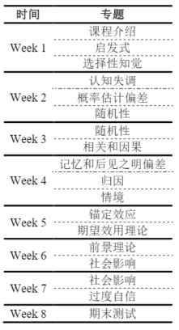

跨专业课程
（06199250）决策心理专题
考核方式：12%考勤（缺一次-4，扣完为止），6*3%作业，35%小组展示，35%考试（开卷），5分bonus。 + 这是心理系的专业选修课，顾名思义，主要内容就是介绍在决策过程中一些心理学知识。 + 作业是每周老师在学在浙大上布置一个主题，要求找相关案例。 + 小组展示是由老师直接给定主题，展示后组内互评，按照互评结果分配分数。 + 考试分为两部分。 + 一部分在最后一周，六选三回答案例分析大题，以及一道“在这门课你学到了什么”的送分题，最后一次课前老师会把上课要点整理好发在群里当开卷资料。 + 另一部分在某次课上，会提前通知，做一道案例分析大题。开卷。 + bonus是课堂互动，机会不多也没必要卷这个。 课程是很轻松的，据老师说班里外专业比本专业多得多，外专业上完全没问题，当通识课上就行了。老师也是当通识课上的，对内容感兴趣的话可以选，内容如下。

- 有两个可能需要注意的点，一是小组合作的时候也许有必要找个心理系的，因为老师提出的主题可能你不懂（网上查到的也不准确，gpt查到的也不准确）但心理系的会稍懂一点（他们至少有课本）；二是不在最后一周的那部分考试时是没有开卷资料的，可能有必要稍微准备一下。
- 但是感觉老师给分有点严格，作为开卷考+主观题，分数给的有一点低。